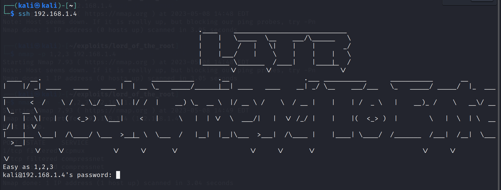
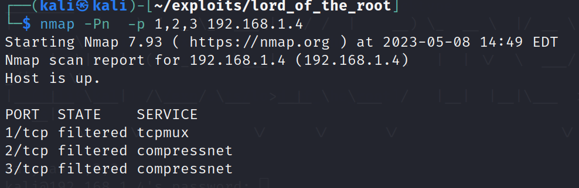
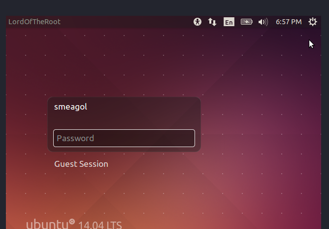

when we try to connect to ssh via this we get :

after finding a bit I tried this hint as it was: 1,2,3 -> they are not password , or something , but they are ports!!! , and yes nmap ignored them
they say knock friend to enter , are they saying port knocking?
when you run nmap , it doesn't show up , when you specifically ask:

we also get this :  from the screen of the user , basically giving us the username